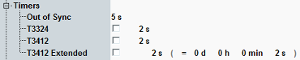

The parameters in this section configure timers.

The "Out of Sync" timer specifies the time after which the instrument, having waited for a signal from the connected UE, releases the connection. The timer is started when an uplink grant message is sent to the UE.
Remote command:Timer "T3324" defines how long the UE stays in idle mode after a transition from RRC connected to RRC idle. When the timer expires, the UE enters the power-saving mode (PSM).
The T3324 value is only signaled to the UE if the UE requests PSM and PSM is allowed, see "PSM Allowed".
If the checkbox is off, the value requested by the UE is returned. If the checkbox is on, the configured value is returned.
Remote command:Timer "T3412" controls the initiation of a periodic tracking area update by the UE.
If the timer is disabled, no periodic tracking area update is required.
Remote command:The extended T3412 setting allows much longer timeout values than the T3412 setting.
If the UE supports extended values for T3412, it uses this setting instead of the T3412 setting.
Configure the timer in seconds. The setting is displayed for information in days, hours, minutes and seconds.
Remote command: